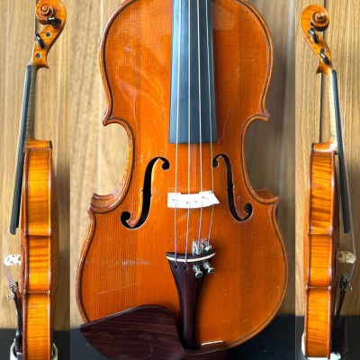

Violino
- Origem Italiana
- Guido Sant'Anna Paulista de 17 anos, e considerado o melhor Violinista do mundo atual
- Itzhak Perlman e Israelita Americano é considerado o melhor Violinista do seculo XX e XXI
- Toca-se em Quarteto de Cordas, Orquestra de Cordas, Orquestra Sinfônica, Orquestra Filarmônica e outros

Violino Acústico
 Violino Elétrico
Violino Elétrico
História do Violino
Clique Aqui!